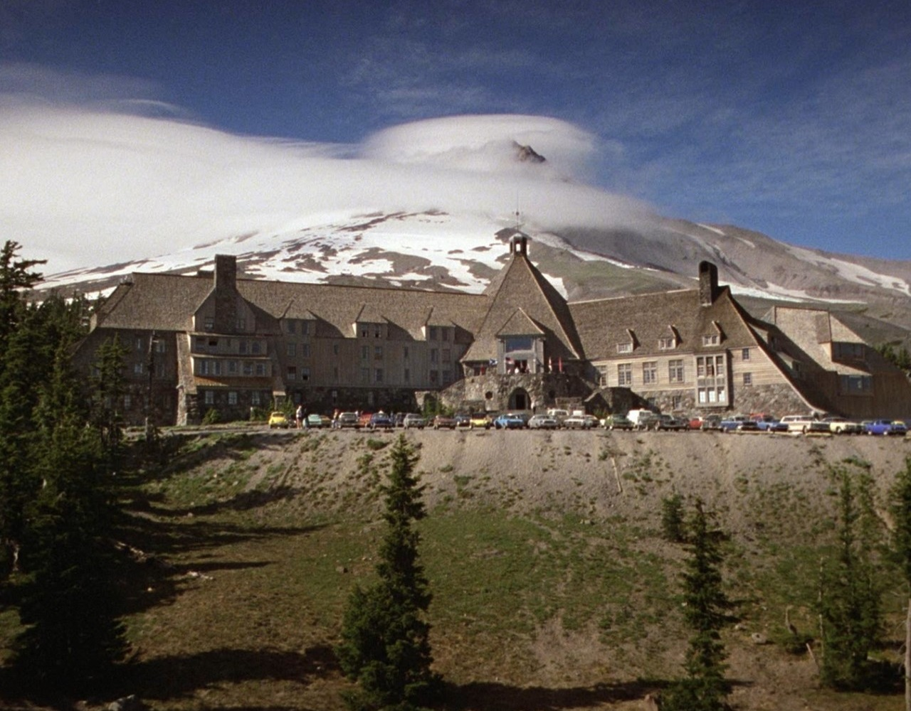

Durante o inverno, um homem (Jack Nicholson) é contratado para ficar como vigia em um hotel no Colorado e vai para lá com a mulher (Shelley Duvall) e seu filho (Danny Lloyd). Porém, o contínuo isolamento começa a lhe causar problemas mentais sérios e ele vai se tornado cada vez mais agressivo e perigoso, ao mesmo tempo em que seu filho passa a ter visões de acontecimentos ocorridos no passado, que também foram causados pelo isolamento excessivo.
A produção ocorreu quase que exclusivamente nos estúdios da EMI Elstree, com cenários baseados em locais reais. Kubrick costumava trabalhar com uma equipe pequena, o que lhe permitia fazer muitas tomadas, às vezes para o esgotamento dos atores e da equipe. A então nova montagem Steadicam foi usada para filmar várias cenas, dando ao filme uma aparência inovadora e envolvente. Houve muita especulação sobre os significados e ações do filme por causa de inconsistências, ambiguidades, simbolismo e diferenças em relação ao livro. O filme foi lançado nos Estados Unidos em 23 de maio de 1980 e no Reino Unido em 2 de outubro de 1980, pela Warner Bros. Havia várias versões para lançamentos teatrais, cada uma com um corte menor que o anterior; cerca de 27 minutos foram cortados no total.
As reações ao filme no momento de seu lançamento foram misturadas; Stephen King criticou o filme devido a seus desvios do romance original. A avaliação se tornou mais favorável nas décadas seguintes e agora a obra é amplamente considerada como um dos maiores e mais influentes filmes de terror já feitos. The Shining é amplamente aclamado pelos críticos de hoje e se tornou um ícone da cultura pop. Em 2018, o filme foi selecionado para preservação no National Film Registry pela Biblioteca do Congresso como sendo "significativo culturalmente, historicamente ou esteticamente". Uma sequência, Doctor Sleep, foi lançada em 8 de novembro de 2019.
The Shining (O Iluminado no Brasil, A Luz em Portugal) é um romance de horror do escritor estadunidense Stephen King. Lançado em 1977, foi o terceiro livro de Stephen King e seu primeiro best-seller em capa-dura. O sucesso do livro foi tanto que firmou King na carreira de escritor no gênero. Os cenários e personagens foram influenciados pelas experiências pessoais do Stephen King, incluindo suas visitas ao Hotel Stanley, no Colorado em 1974 e a sua reabilitação do alcoolismo. Um filme baseado no livro, The Shining, dirigido por Stanley Kubrick foi lançado em 1980. Em 1997, o livro foi adaptado para uma minissérie de televisão. O livro ganhou uma sequência em 2013 intitulada Doctor Sleep, sendo este também adaptado para o cinema em 2019 em um filme homônimo.
O Iluminado centra-se na vida de Jack Torrance, um aspirante a escritor e alcoólatra em recuperação que aceita o emprego de zelador na baixa temporada do famoso Hotel Overlook, nas montanhas do Colorado, para onde se muda com sua esposa Wendy e seu filho Danny. Danny é “Iluminado", que no contexto da história significa que ele possui um conjunto de habilidades psíquicas que permitem que ele veja o passado horrível do hotel. Uma tempestade de neve deixa a família presa nos arredores e forças sobrenaturais que habitam o hotel começam a influenciar a sanidade de Jack, colocando em perigo sua esposa e filho.